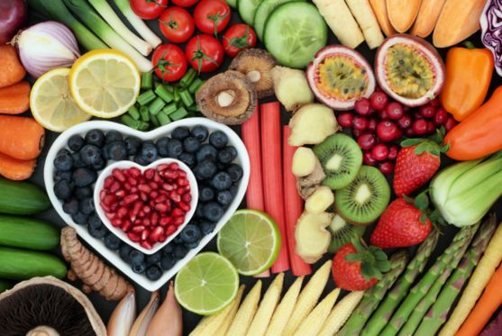

Combatendo a Retenção de Líquidos
- 15 Jan, 2025
- 20
Published by Rosanita Garcia on 20 de outubro de 2023
Sentir-se inchada, como se estivesse retendo líquidos é muito comum entre as mulheres. A alimentação pode ser uma grande aliada para aliviar esse sintoma. Mas antes vamos entender o que é essa retenção.
O corpo humano é composto por aproximadamente 70% de água e em algumas situações, o organismo retém água em excesso, resultando em edemas. O sistema linfático é o responsável por levar esse excedente de fluidos dos tecidos e órgãos para o sangue, e falhas neste sistema pode resultar na retenção de líquidos. A rede de vasos que compõe o sistema linfático, apresenta chegada dos fluidos dos tecidos, mais intenso do que de saída. Desta forma, há excesso de líquido no espaço entre as células, que é, então, reabsorvido pelos capilares linfáticos. Quando esse mecanismo natural do organismo está sobrecarregado por causa de decorrentes fatores externos, a água localizada no interstício aumenta, resultando em retenção de líquidos.
A retenção de líquidos na fase pré-menstrual é também bastante comum e é causada pela mudança hormonal durante o ciclo menstrual. Alterações em outros hormônios também podem estar associadas à retenção de líquidos, com a insulina, cortisol, estrogênio e progesterona.
Fora do período menstrual, as causas dessa retenção de líquidos podem ser diversas:
– Ingestão de sódio e açúcar em excesso na alimentação.
– Estresse.
– Sedentarismo.
– Problemas renais, cardíacos ou hepáticos.
– Hipotiroidismo.
– Gestação.
E quais são os sinais de retenção de líquidos? Entre eles, podemos destacar:
– Aumento de peso observado na balança ao final do dia.
– Mãos, pés, tornozelos e pernas inchados.
– Marcas de pressão no corpo, causados por meias, calça jeans e sapatos.
– Sensação de peso nas pernas, principalmente ao final do dia.
É possível evitar esse problema e caso ele já ocorra, você pode amenizar o sintoma através de condutas simples, mas muito eficientes:
Diminua o consumo de produtos industrializados, molhos prontos, temperos prontos, refrigerantes, embutidos e carnes processadas.
Reduza o sal adicionado na comida.
Aumente a ingestão de alimentos ricos em magnésio: oleaginosas, grãos, banana, abacate, tofu, verduras verdes escuras, semente de girassol e de abóbora.
Aumente o consumo de alimentos ricos em potássio: banana, água de coco, beterraba, frutas secas, batata doce, kiwi, laranja,melão, mamão, uva.
Pratique exercícios físicos.
Tome chás com propriedades diuréticas, entre eles o chá verde, hibisco, cavalinha e dente de leão.
Consuma frutas e vegetais que ajudam a eliminar o excesso de líquidos: melancia, abacaxi, melão, maçã, pera, pepino, gengibre, salsinha, salsão.
Evite o consumo de carboidratos refinados como o próprio açúcar e as farinhas brancas.
Beba muito água. Faça o cálculo de mais ou menos 35ml por kg de peso corporal.
Na minha opinião a drenagem linfática deveria fazer parte da vida de todas as mulheres, além de ajudar muito a desinchar, é uma forma deliciosa de relaxar.
Na hora de preparar suas refeições utilize as ervas e especiarias para dar sabor a comida e reduzir o sal.